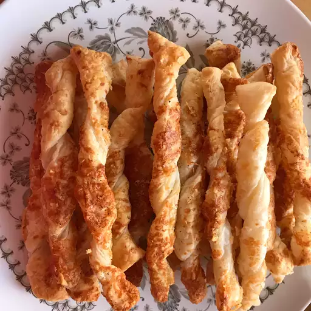

Cheese Sticks

Description:
Super-simple cheesy breadsticks with no dough used. Recipe by Chef John
Ingredients:
- 17.5 oz frozen puff pastry (half package)
- 2 teaspoons olive oil
- 1 pinch salt and freshly ground black pepper to taste
- 1 pinch cayenne pepper
- 1/4 cup shredded sharp white cheddar cheese
- 5 tablespoons freshly shredded parmigiano-reggiano cheese, divided
Directions:
- Preheat oven to 400 degrees Fahrenheit. Line a baking sheet with parchment paper or a silicone baking mat
- Place a sheet of frozen puff pastry dough onto a floured work surface and allow dough to thaw just until it can be unfolded. Unfold dough into a flat sheet; brush top of puff pastry dough with olive oil. Season with salt, black pepper, and cayenne pepper.
- Sprinkle white cheddar cheese and 1/4 cup Parmigiano-Reggiano cheese onto the dough, covering the surface. Top with a piece of plastic wrap; press cheese and seasonings firmly into the dough with your fingers or by laying a sheet pan onto the dough over the plastic and pressing it down.
- Remove plastic and use a pizza cutter or sharp knife to cut the dough down the seam lines into thirds; cut each third lengthwise into thirds for a total of 9 breadsticks.
- Pick up a dough strip and place it seasoned side down on to the work surace, and twist from both ends 8 to 9 times to make a rolled tube of dough with the seasoned side out. Place breadsticks onto prepared baking sheet.
- Sprinkle remaining tablespoon of Parmigiano-Reggiano cheese over the sticks. Roll the sticks lightly to even up their shapes and pick up and press any dropped cheese onto the surfaces.
- Bake in the preheated oven for about ten minutes; flip and continue baking until breadsticks are browned and crisp, 10 to 20 more minutes. If you pick up a stick by one end and it droops, bake for several more minutes. Cool on wire rack before serving.
Cook's Notes
You can put all kinds of dried herbs and spices, curry powders, smoked paprika, and things like that. I am showing my basic formula and then you will adapt.
The wider the strips, the more bread-like the cheese sticks will be. The tighter you twist them, the more dense and crisp they will be. A loose twist will result in a softer, breadier stick.
Nutrition facts
184 kcal 13g fat 12g carbs 4g protein